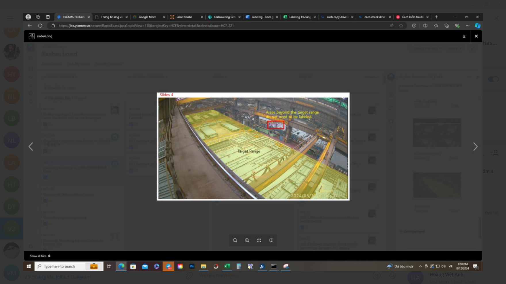

Tên đầy đủ của em là Nguyễn Quốc Công, em sinh ngày 12/12/2002 tại xã Đại Đồng huyện Thạch Thất thành phố Hà Nội. Em hiện đang là sinh viên của Đại học Bách khoa Hà Nội và đang có mong muốn tìm một môi trường chuyên nghiệp và phù hợp để học hỏi nhiều hơn trên con đường trở thành một kĩ sư Công nghệ thông tin.
Bước chân vào đại học với khởi đầu là ngành Vật lí kĩ thuật, em đã mơ ước mình sẽ làm được rất nhiều điều tại môi trường mới này, nhưng hiện thực lại không giống như những gì mình mơ mộng. Em đã suy nghĩ rất nhiều và tự hỏi "Lựa chọn ban đầu của mình liệu có chính xác hay không"
Sau bao nhiêu ngày suy nghĩ cùng với những trải nghiệm mà bản thân gặp được, em cảm thấy mình khồn thực sự phù hợp với ngành Vật lý kĩ thuật này. Em đã quyết định chuyển ngành vào giữa năm 3 dù cho đã có rất nhiều lời khuyên không nên chuyển tới từ bạn bè, thầy cô cũng như gia đình. Em bắt đầu bước chân vào chuyên ngành mới với một tâm trạng tò mò cũng như lo lắng
Bắt đầu với ngành học mới khi mình còn mơ hồ, em đã gặp rất nhiều khó khăn trong quá trình bắt đầu học. Lúc đầu là việc chọn ngôn ngữ mình sẽ theo khi học. Trong sự mơ hồ đó, em đã tham gia một lớp dạy lập trình Java và bắt đầu quá trình học ngôn ngữ này. trong thời gian đó, em đã lập trình nên phần mềm đầu tiên của bản thân bằng ngôn ngữ Java. Đó là phần mềm quản lí sinh viên.
Sau một thời gian học tập và làm được 1 số sản phẩm như tạo ra một trang web cá nhân bằng wordpress hay làm các bài tập lớn như nghiên cứu thiết kế giao diện của một cửa hàng sách online, nghiên cứu các chức năng cần có của một cửa hàng sách online, nghiên cứu các tiến trình của hệ điều hành Linux em nghĩ mình đã đủ khả năng và có thể đi làm được rồi.
Em nộp CV của em vào các công ty. Những tưởng với CV của mình mà lúc đó em nghĩ là rất hoàn chỉnh rồi. Thế nhưng đáp lại em chỉ là những cái lắc đầu, những lời từ chối từ các công ty. Em thật sự rất thất vọng. Lúc đó, có một công ty tư nhân mới khởi nghiệp đã nhận em vào làm thực tập sinh của họ. Em đã rất vui và vẫn ảo tưởng với chiếc CV yếu kém của mình
Làm được một thời gian, em mới dần nhận ra được sự kém cỏi trong chuyên môn của mình và nhận ra thế giới công nghệ thông tin quả thật quá rộng lớn. Trước đây em đã nghĩ rằng Công nghệ thông tin thì chỉ có lập trình và lập trình thôi nhưng từ khi đi làm em đã biết bên cạnh việc lập trình thì Công nghệ thông tin còn phân ra thành rất nhiều vị trí cũng như lĩnh vực khác nhau mà lĩnh vực nào cũng rất quan trọng. Em phân vân giữa các lựa chọn, mơ hồ với số lượng kiến thức quá lớn mà mình tiếp thu được. Thế nhưng, những tưởng quá trình theo ngành này của em sẽ bằng phẳng cho đến một ngày anh Sếp của em thông báo em phải nghỉ việc do sự yếu kém của mình trong công việc.
Em đã rất thất vọng về bản thân. Em đã suy nghĩ rất nhiều. Trong thời gian đó, em có xin đi thực tập ở một công ty nữa do trường tổ chức. Trong thời gian này em đã suy nghĩ về việc liệu mình có phù hợp để đi theo con đường này không.
Trong quá trình thực tập, được gặp và được hướng dẫn chia sẻ bởi các anh chị, các bạn, em đã hiểu ra rằng trong ngành công nghệ thông tin hay bất cứ công việc nào cũng vậy, việc khó khăn trong những bước đầu luôn luôn xảy ra. Chỉ có những người quyết tâm đến cùng mới có thể gặt hái được quả ngọt. Đó là khoảnh khắc em quyết tâm theo con đường lập trình này.
Kết thúc thời gian thực tập ở công ty, do công ty không có nhu cầu nhận thực tập sinh chính thức nên em đành phải giã từ công ty đã dạy mình rất nhiều thứ. Mọi người vẫn hay nói với em rằng hãy tìm một nơi mới để học hỏi nhiều hơn. Nhưng em lại nghĩ khác. Em đã nghỉ một thời gian để tìm hiểu sâu hơn về công nghệ thông tin. Sau một thời gian tìm hiểu, đi tham gia các hội nghị như VietNam Web Commit, các buổi chia sẻ về ngành CNTT, giờ đây trong em chỉ có một mong muốn là được hiểu nhiều hơn về ngành CNTT. Em muốn tìm hiểu nhiều hơn về việc lập trình web. Dù không biết lựa chọn của mình sẽ dẫn bản thân tới đâu nhưng em biết rằng đây là một con đường đúng đắn và em sẽ bước trên con đường này.